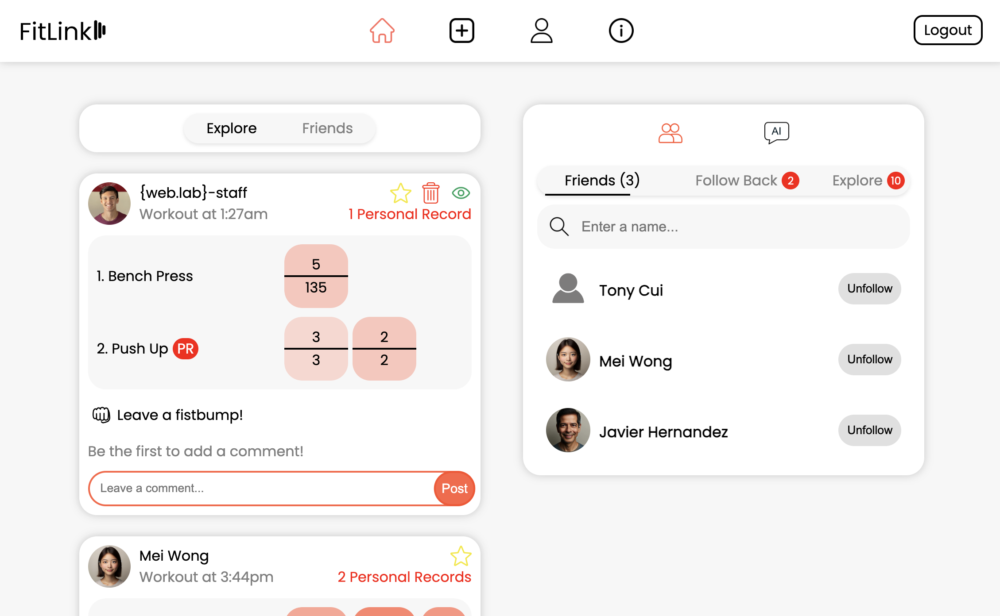
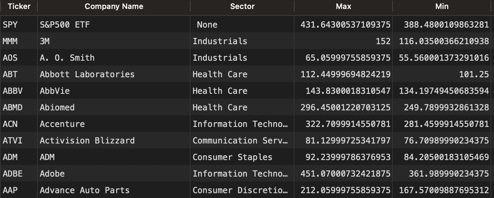

Hello world! 👋
My name is James.
Bio:
4th year at MIT specializing in building AI/ML systems. Currently building OmniRoute.ai, the last unified LLM interface you will ever need. I spend my free time learning about AI, pitching for MIT's varsity baseball team, lifting heavy, running fast for a long-ish time (see you at the Boston half-marathon), and making music for the piano (here's one of my earlier compositions).
Relevant courses:
(Bolded classes are ones I'm taking/grading/LAing currently)
(Italicized classes are some of my personal favorites :D)
- 6.7960 Deep Learning (G) (Really excited for this one)
- 6.1060 Software Performance Optimization (Making bits fly)
- 6.4120 Computational Cognitive Science (How to quantitatively model how humans think)
- 6.3800 Intro to Inference (Grading)
- 6.3900 Intro to Machine Learning (LAing)
- 6.8301 Advances in Computer Vision (made a cool ControlNet to help doctors generate and view x-rays)
- 6.1020 Software Construction
- 6.1800 Computer Systems Engineering (mapping and reducing)
- 6.1220 Design and Analysis of Algorithms
- 6.1910 Computational Structures (programmed a RISC-V processor from scratch)
- 18.C06 Linear Algebra
- 6.1200 Discrete Math
Links:
Some highlights from my most recent trip (🇨🇭):


My Projects
FitLink
FitLink is a social-media application that hopes to completely digitize the workout-tracking experience. It does this by storing relevant information about your workouts and creating a personalized leaderboard for you and your friends so you can compete and stay motivated.
Development Notes
Technologies used:
MongoDB Atlas, React, Express.js, Node.js and Render
What I learned:
FitLink was developed as part of MIT's annual IAP "Web Lab"
programming competition. This was truly my first real
long-term hacking experience and I went really deep into
full-stack development. I went into the project with a very
surface level understanding of HTML/CSS, JavaScript and web
development in general and I came out of the project with the
ability to create any full-stack application that I want. I'm
proud of this project and had plans to scale the platform but
those plans took a backseat to my baseball season and other
classes. At a higher level I learned the importance of good
initial software design and abstraction since dealing with a
increasingly larger project becomes unwieldly and I soon found
myself spending more and more time refactoring old code than
actually engineering new features which is suboptimal.
X-Ray Generation with ControlNet
This project was completed as part of 6.8301 Advances in Computer Vision and was more of a deep dive into ResNets and trying to see if we could fine-tune one to control their output for a specific use case. Our group decided that the generation of x-rays based off of a pose sketch (similar to the ones in OpenPose) has some pretty useful applications with pre and post-treatment patient care. I led the technical development of the data preprocessing and model training pipelines and eventually trained our model to be 7% better than SotA. Got very comfortable with PyTorch and hacking a model to make it work better by adjusting the structure, hyperparams and data.
Development Notes
Technologies used: Google CoLab, Python, PyTorch
Technologies used:
Google CoLab, Python, PyTorch
What I learned:
This was a very insightful project into the world of ML. It was
my first large-scale ML project and I had 2 other people on my
team to consult and help develop the software infrastructure to
make it work. The first thing I quickly learned what how sparse
widely used datasets were at least when it came to medical
imaging. The scope of our fine-tuning could only go so far as to
what was depicted in the data set and for a lot of our potential
use-cases there just wasn't enough high quality x-rays that fit
the use-case. In addition, configuring environments suitable for
ML training and preprocessing proved to be difficult and working
on the platform without a guaranteed connection to a sustained
runtime became extremely cumbersome. There were many instances
where I needed to close my computer which inadvertantly ended a
training run which eliminated my environment that I set up which
meant redownloaded every package that I needed for the training.
What I found interesting what the different effects of SoTA
techinques on the performance of the model on the validation set
and it was fun getting to do things like BatchNorm, dropout and
early stopping during my runs.
Stock Screener
I wanted a comprehensive way to view different market trends for single and grouped stocks so I created a program that would run everyday and capture all of the different movement patterns of the different stocks in the S&P500 so I could get a general understanding of what was going on in the market from a statistical perspective. Obviously this data is widely available on the internet but what's different about this program is its extensibility. I'm able to create different metrics and criteria for stocks and then rank the stocks against each other based on that custom criteria which is something that is difficult to do on other visualization and backtesting platforms.
Development Notes
Technologies used: Python, cron jobs, SQL, PostgreSQL
My Blog
The purpose of these blog posts is to document my life so I can look back on my different perspectives and how they've influenced the graph of my life and what decisions I've made. I hope by actively contributing to these blog posts I can get a better understanding of myself and the world. My goal is to never let my priors go to zero and to always be constantly updating my beliefs :)
Perfect (???) Hashing
I reviewed the world of hashing today and I must say that from the perspective of someone who is looking to improve the latencies of different API and backend systems getting to understand the mathematical frameworks that go into evaluating different hashing strategies was fascinating. Hashing deals with trying to reduce the asymptotic runtime of an abstract data type that can:
- Insert
- Search
- Delete
items. We can imagine that the simplest way to do this would be just to allocate an array given some bound on the range of numbers that we are expecting to store and then just store the values inside of the table at that corresponding index. However this is infeasible since the range of numbers can grow exponentially large and allocating those arrays in memory can be intractable. Thus, this motivates some way to maybe map the values that we're given to some constant space. This is where we get hashing.
Hashing is the action of mapping some number space {0,..., n-1} to a smaller number space {0,..., m-1} which usually means some slots in a dynamically allocated array. This can be tricky for this reason:
- The values which we are hashing could have some intrinsic pattern to them (multiples or powers of 2, same value, etc...) which means that they could possibly be mapped to the same value in {0,..., m-1}
This raises the question of how can we guarantee that we minimize the number of collisions that happen in the table? Also, how do we deal with collisions when they occur? It isn't like we can just give up on trying to insert a value at runtime. This introduces the first couple of strategies that deal with collisions:
Chaining
Chaining is the simple strategy of just creating linked lists for every entry in the hash table so that if there's ever a collision then we can just store the value within the linked list by appending it. This has an obvious issue since a malicious adversary can just pick keys that map to the same hash value which creates a chain of length O(n) and thus defeats the purpose of the hash table in the first place since it would take O(n) time to search up a value in our hash table. This motivates some other way to deal with collisions
Open Addressing
Open addressing is the process of utilizing other empty space in the table to store values if they happen to collide. In order to do this there must be some probing sequence that effectively encodes some permutation of <0,..., m-1> so that every spot in the table is checked once. The idea is that if we see another element stored at some spot inside of the hash table then we just check the next index inside of the probing sequence at that index in the hash table. To search for elements we would calculate its probing sequence and then try and search for the element. If at some point we come across an empty index and we still haven't found the element than it is safe to assume that the element does not exist in the hash table. The easiest way to do this would be to linearly probe through the array and then wrap around but this creates "chains" of values within the table which isn't good for keys drawn from a distribution which gives high probability to keys bunched together or that follow some pattern. Another way we could design a good probing sequence is by using quadratic probing or picking some c_1 and c_2 such that h(k, i) = (h(k) + c_1i + c_2i^2) mod m. This is better but still creates these clumps which we would ideally want to get away from. The best way to approach the open addressing problem is by trying to get close to a uniform "spread" of the probing sequence. We can do this by defining two auxiliary hash functions h_1 and h_2. h_1 can just be our regular hash function but it is important that h_2 maps to a number that is coprime or relatively prime to m. Here is why it is important. We are looking to generate a probing sequence that is some permutation of <0,..., m-1> and this is only possible due to the coprime property that states that if two numbers say a, b are coprime than their ax = 1 mod b which means that a has a multiplicative inverse mod b. This means that for some c ∈ 0, 1,..., m-1 if we do ac mod b then the residuals will map to that permutation of <0,..., m-1>. We observe that this c is in fact i in the original equation so our constraints are satisfied for the hashing function. Open addressing, however, suffers from managing deletions as you can imagine that deleting an element would cause searching for other elements to incorrectly terminate thinking that the element isn't there when actually another element that was taking the space was just deleted. We can assign "tombstone" markers onto different indices within the table so that search can pass over them. However this limits the provable guarantee that the search time is O(1) and related to just the load factor so chaining is used often when deletions must be made.
Universal Hashing
Even with these two strategies because our hashing functions are deterministic we don't have the ability to protect against a malicious adversary who is looking to map our keys to similar values. To do this we must randomized the selection of a hash function from a family of hash functions that in expectation provide us with the simple uniform hashing assumption. A good hashing family would be h_{a, b}(k) = ((ak + b) mod p) mod m such that if we choose a in {1,..., m-1} and b in {0, 1,..., m-1} then we are guaranteed to get that the probability of two keys colliding in expectation is 1/m if the a and b are chosen randomly.
This is both a provable and powerful result. Since we can guarantee that in expectation that the probability that two keys mapping to the same hash value is 1/m regardless of the distribution and sampling method that produced these keys we know that we can both search and delete in expected and amortized O(1) time.
My goals for this semester (8/28/2024)
If I remember correctly I think there was some framework that I learned that made making goals optimal. It had some catchy acronym like FAIR or TIME but I think a general framework for measuring my work and then making some sort of quota that I need to fill should suffice.
I think the first question is what should my goals be aimed at? I think at this point of my career I want to aim towards becoming the best engineer that I can be and that means not only getting exposure to more things but understanding how to solve problems and learn quickly in different environments. This takes me to my first goal:
1) Get an A in 6.1060One of the classes that I'm taking this semester, 6.1060, is a notoriously time-intensive class and it deals with a lot of low-level code and infrastructure. I don't necessarily need to take this class as I will have the credits to graduate whether or not I take it, but I believe that the time that I spend taking this class will improve my skillset as a software engineer better than any other pursuit that I could do on my own/with other people. Approaching a topic like this is a monumental effort in itself and randomly walking through material on YouTube and GitHub might entail hundreds of wasted hours but learning this material in a course guarantees that my heuristic is optimally set by professors and TA's which understand the topic at a high level. If I ever want to deal with and completely control complex systems at some point in my career I think this class is necessary for me. Might as well take it now and strive for excellence while I'm young and able.
2) Leetcode (>5 new problems a day)I think one thing I've realized about the interview process and software engineering is that the two are very different disciplines but are equally important. Without one the other doesn't work so it is critical to be excellent in both spheres to be a great engineer. As I've taken more assessments and gone through more interview processes I've realized that success on leetcode type algorithm problems is a function of solving similar problems as recently as possible. This essentially means that to prepare for interviews you want to solve as many leetcode problems as possible and then hope in the interview you come across a problem which closely matches one that you did in preparation for the interview. Easier said than done. This takes a tremendous amount of discipline and willingness to accept not doing things you might enjoy for a while which sucks but it's necessary to get an elite position.
3) Sleep (in bed for 8 hours a night)This is probably the hardest goal to meet given the amount of classes and work that I've cut out for myself but it is most likely the most important goal on this list. When deciding when do put for my next goal I thought of things like "maintain emotional health and regulate your mood better" or "stay injury free" but I think all of these wellness goals, while great, can be traced back to sleep in one way or another. If I need to sleep for less time than allotted so be it but I cannot allow myself to disregard this goal for extended periods of time (3+ nights in a row) because that's when I encounter focus and emotional issues that I wouldn't otherwise have.
4) Derive a suitable financial strategy given my job offers
While boring I think this is a very important goal for a couple
of reasons.
1) It gives me peace of mind when
spending on big ticket items (trips, security deposit for an
apartment, etc...) and smaller stuff like going out and having
fun which benefits my interpersonal relationships.
2) Gives me full control and knowledge of my
financial situation if there ever comes a time where things go
awry.
I think I currently lack a defined idea of what I should be
spending on dates and fun nights out with my friends especially
in light of potentially living with my significant other after I
graduate which might increase costs. I also want to travel over
this coming summer so that will have to be planned for. In
addition, I think while I'm young and have enough capital I need
to be making sizable and frequent risks since if the money that
I'm willing to lose now is invested in some risky position that
has a 10:1 payoff in a rare event will have outsized positive
effect on my life compared to negative effect of potentially
losing it all. For example if I invest $5,000 into a risky
option and it pays off 5x then I end up with $25,000 that I can
now invest into an index fund which will pay me out quite a lot
more money over my lifetime compared to if I just had the
$5,000. Identifying areas in the market where there is asymmetry
is hard but I think in this era of AI there are some good plays
to be made.
This is difficult but I want to see if I'm able to do it. It would just take 10 minutes at the end of each day but I really want to see how I can improve my life just by measuring what I'm able to get done, what I think I did well and what I think I can do better. Hopefully through this I can track my progress towards my previous goals and hopefully try and achieve them. I wish to revisit these goals at the end of my semester and be happy with where I've come as a result of having these goals.
Making my personal website (8/23/2024)
I guess the reason why I wanted to make a personal website wasn't entirely just because I thought it might be nice to have one. I actually think there's a genuine issue with how there exist multiple apps and places where we effectively host our personas on. Like how LinkedIn is for our "professional" side, Instagram/FB(if you're older) is for our "rich/successful/cool trips and showing off" side and Twitter/X is for more of our intellectual and argumentative/opinionated side. There of course are other examples of platforms which essentially take in different personas and interests but it begs the question of why there can't be one site or application that hosts all that we need?
I guess the obvious answer is that the task of building such a website/application is such a challenge that we simply don't have the technology to support such an endeavor. I think the fact that X is currently attempting to be the "Everything app" confirms this belief but I can't help but theorize that it is just the way that we humans like to organize our different personas and interests into buckets. Like if I log into instagram I have a certain attitude and thing that I'm looking for compared to when, say, I log ito X or LinkedIn. Like a specific subconscious mindset is activated which locks me into a certain thought process when I enter a certain app. The problem with doing this is that I don't believe you are representing the full-ness of your being as a human when you engage with these applications. This is problematic because if we're not authentically representing ourselves then we leave connection, employment and discourse opoortunities on the table all of which improve the human condition.
This is in fact why I think something like a personal website built from scratch is important to have. It essentially frees anyone from the algorithmic confines that any consumer application like Facebook, Instgram or Twitter tries to impose on you. Here I have to say that I believe Twitter does a better job at letting users understand exactly what is in the algorithm which is really cool and is why I only have Twitter (except for LinkedIn because I want to be employed but even Twitter is starting to allow the ability to post and look for jobs so I might delete it in the future if it is comprehensive enough).
I hope the future of the website looks like something that accurately represents and logs my beliefs, big or small, over the course of some significant amount of time. If all else fails at least I'll have a way for people to contact me and see what I'm up to.